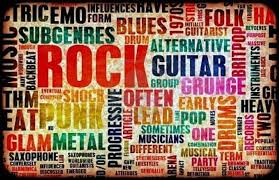

La historia de la música es el estudio de las diferentes tradiciones en la música y su orden en el planeta.
Como en todas las civilizaciones conocidas hubo alguna forma de manifestación musical, la historia de la música abarca a todas las culturas y épocas.
A menudo se utiliza la expresión «historia de la música» para referirse exclusivamente a la historia de la música europea y su evolución en el mundo occidental. Observe aquí
La música, una de las artes más antiguas y extendidas del mundo, es un ámbito amplísimo. Como tal, han ido surgiendo diferentes maneras de categorizar y segmentar su contenido. Una de las clasificaciones más típicas y conocidas es la de los estilos musicales. Sin embargo, aunque se haya oído hablar de ellos, muchas veces ocurre que se tiene solo una idea difusa. Por este motivo, vamos a tratar de plantearte aquí los puntos esenciales. Obvserve aquí
Para encontrar la calma, la música relajante nos proporciona un maravilloso equilibrio interior ya que tenemos un aporte de serotonina que ayuda a aliviar el estrés, calmar molestias físicas, tensiones y preocupaciones ya que actúa como analgésico. Observe aquí
História La Música:
En esta sección conoceran la história de una de las maravilaas que tiene el ser humano.
Incluyendo desde los primeros músicos de la história hasta los íconos más reconocidos del mundo.
¿Qué es la música?
֎La música es una de las llamadas Bellas Artes, es decir, a un género artístico, que consiste en conseguir efectos estéticos a través de la manipulación de sonidos vocales o instrumentales, conforme a estándares culturales de ritmo, armonía y melodía.֎
֎Por otro lado, la música se asocia con ciertos aspectos de la mente humana y se considera un estímulo importante para el pensamiento lógico y matemático, la adquisición del lenguaje, el desarrollo psicomotriz y otro vasto rango de actividades sociales y mentales propias del género humano. Por eso se la incluye usualmente en los distintos programas escolares.֎
História de la música
֎El origen de la música se encuentra cubierto de misterio, aunque se estima comenzó en la prehistoria de la humanidad y se lo vincula con los ritos de apareamiento y con el trabajo colectivo.
La danza y el canto parecen haber estado desde el principio asociados al modo en que el ser humano comprende el mundo. De hecho, formaban parte de sus manifestaciones religiosas o chamánicas, como rituales de sanación, cantos de batalla o de cacería, o bailes para atraer la lluvia.
Los instrumentos más antiguos son flautas de hueso de más de 30.000 años de antigüedad. Mucho más tarde, en Sumeria del 3.000 a. C. existían instrumentos primitivos de percusión y de cuerdas. Por su parte, en el Imperio Nuevo del Antiguo Egipto empleaban escalas de siete sonidos distintos, y diversos instrumentos como el arpa, el oboe y los tambores.֎
¿Cuáles son sus caracteríticas principales?
֎Se compone de cuatro parámetros fundamentales, que son:
La altura. Que no es más que la frecuencia de los sonidos producidos, permitiendo clasificarlos en graves o bajos, y agudos o altos, dependiendo de cuántos ciclos completen por segundo sus vibraciones.
La duración. O sea, el tiempo en que permanecen vibrando o emitiendo un sonido los instrumentos, lo cual está fuertemente relacionado con el ritmo.
La intensidad. Que es la fuerza con que se produce un sonido, o la energía que contienen sus ondas sonoras, representado por la amplitud de onda de las mismas.
El timbre. Que es la cualidad del sonido, determinada por la forma de las ondas que lo componen (en el caso de sonidos complejos, como los musicales) y es lo que nos permite distinguir a los distintos instrumentos que suenan en una orquesta.֎
֎Instrumentos eléctricos: bajo eléctrico, guitarra eléctrica, theremín, sintetizador, etc.֎
¿Cuántos tipos de música existen?
֎Exiten muchas formas de clasificar la música, ya que se trata de un arte milenaria y de historia vasta y compleja. Sin embargo, a simple vista es posible discernir entre֎
֎Música popular: Este término se refiere usualmente a las manifestaciones musicales provenientes del pueblo llano, es decir, del folklore, la tradición y en ocasiones, la protesta. Se caracteriza por transmitirse de generación en generación y no siempre tener un autor determinado֎
֎Música académica: Diametralmente opuesta de la música popular, la música académica o “clásica” es la que proviene de una tradición cultural más elitista, europea y clasicista, ya sea que provenga de los grandes compositores medievales, o bien de los estudiosos y compositores vanguardistas de la música. No siempre tiene un gran público, pero sí una importante valoración dentro de la cultura.֎
֎Música comercial: Se llama así a la música consumida por el gran público de manera recreativa, y que impulsa mayormente la industria discográfica o musical del mundo entero. Abarca diversos géneros y por lo general es tenida en poca estima por la academia, aunque dichos criterios de elitismo musical siempre son cuestionables.֎
֎Música ceremonial: En este caso, hablamos de la música que se utiliza para marcar celebraciones, rituales u ocasiones especiales, sin importar su autoría ni otros detalles, como es el caso de la marcha nupcial, la marcha fúnebre, la marcha presidencial de un país, etc.֎
֎Música publicitaria. Aquella que acompaña a la publicidad o que sirve de cortina a programas televisivos o shows radiales. Suele ser anónima y formar parte del patrimonio de una empresa o de los productores del show. No suele ser considerada música artística en absoluto.֎
¡No se debe confundir con los géneros musicales!

¿Cuántos géneros musicales existen?
֎Los géneros musicales son clasificaciones más o menos estrictas que sirven para orientarnos a la hora de elegir música, especialmente en ámbitos comerciales o estaciones de radio. Se distinguen entre sí por el uso de algunos instrumentos, por ciertas tendencias estéticas o por cierto contenido histórico que las acompaña.֎
֎Actualmente existen muchos y muy variados géneros musicales. Una lista resumida de los más célebres géneros musicales del momento incluye:֎
֎Música Pop: Su nombre proviene de “popular”, en el sentido de “famoso” y no de “tradicional”, y se trata de un género muy comercial de música bailable, en el que se da prioridad a la voz cantante y se acompaña con patrones rítmicos sencillos. Nació en Estados Unidos en la década de 1960 y desde entonces ha dominado las listas de ventas en el mundo entero.֎
֎El blues: Originalmente consistía en un hombre a solas cantando acompañado con un banjo o una guitarra, allá en el siglo XIX, pero a mediados del siglo XX se reinventó en el Reino Unido y en otros países, siguiendo un patrón repetitivo en una estructura de doce compases. Su nombre significa “melancolía” o “tristeza” y muchos de sus mayores exponentes eran norteamericanos de raza negra.֎
֎El rap: Otra invención estadounidense, esta vez de a principios de 1970, se trata de un género que combina rima, habla rítmica y jerga, esta última sobre todo de los barrios pobres negros estadounidenses. Vinculada con ciertas tradiciones orales africanas, el rap emplea patrones rítmicos muy pronunciados y monótonos (el beat).֎
֎El rock: Término empleado para agrupar un conjunto de subgéneros musicales derivados del Rock n’ roll estadounidense de los años 60. Su instrumento de mayor protagonismo es la guitarra eléctrica, acompañada de bajo, batería y otros instrumentos.֎